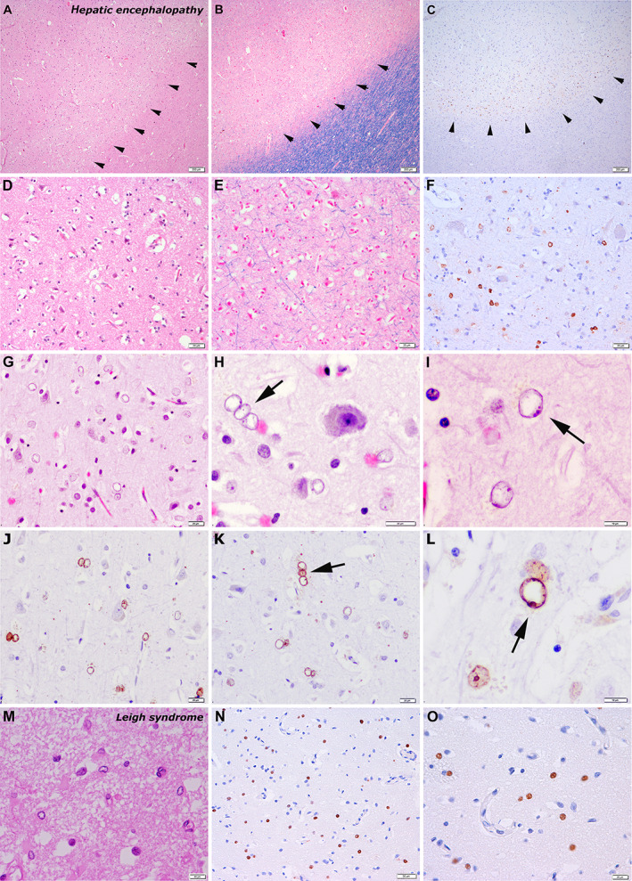
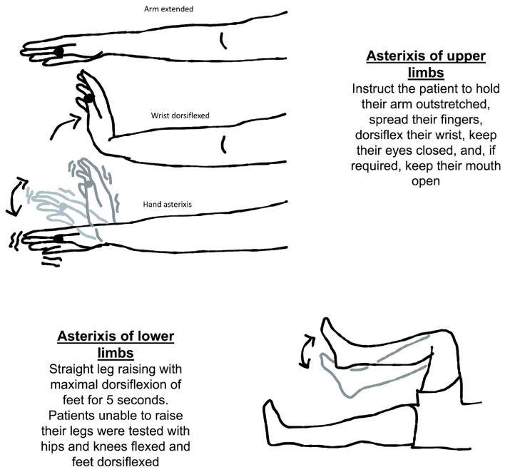

定義與定位
這個病是什麼？在分類樹的哪個位置？跟隔壁的病靠什麼分開？
| 項目 | 重點 |
|---|---|
| 本質 | 肝功能不全與／或門體分流造成的可逆性腦功能障礙；腦部沒有結構性病灶 |
| 好發族群 | 肝硬化（完整機制見 Cirrhosis）、TIPS 術後、大型自發性門體分流 |
| 病因分型 | Type A 急性肝衰竭／Type B 純分流而無肝實質病／Type C 肝硬化（最常見） |
| 時序分型 | episodic／recurrent（6 個月內 ≥2 次）／persistent |
| 嚴重度分型 | Covert HE（West Haven 0–1，含 minimal HE）vs Overt HE（West Haven 2–4） |
病因與機制
為什麼會發生？病生理鏈條長什麼樣？——這一節寫好，下面的處置就不用背。
flowchart TD A["腸道細菌分解含氮物質<br/>產生大量氨"] --> B["門體分流<br/>加上肝臟解毒能力下降"] B --> C["氨與其他神經毒素<br/>進入中樞"] C --> D["astrocyte 內<br/>麩醯胺酸堆積"] D --> E["astrocyte 腫脹<br/>Alzheimer type II"] E --> F["腦水腫<br/>神經傳導失調"] C --> G["全身發炎放大毒性"] G --> F F --> H["波動性意識障礙<br/>與 asterixis"] classDef key fill:#263238,stroke:#000,color:#fff,font-weight:bold class H key
腦內沒有完整的尿素循環，astrocyte 只能靠 glutamine synthetase 把氨固定成麩醯胺酸（glutamine）。麩醯胺酸是滲透活性物質，堆在細胞內就把水拉進來——astrocyte 腫脹，型態上表現為 Alzheimer type II astrocyte（核大、淡染、核仁明顯）。這是 HE 唯一的病理特徵，而它是代謝性、可逆的。

誘發因子
找誘因比給藥重要。這一節是整篇的重心。
| 誘因 | 為什麼會誘發 | 值班要做的事 |
|---|---|---|
| 消化道出血（Esophageal varices↗） | 腸腔內的血液＝高氮負荷（血紅素蛋白），細菌分解後大量產氨；同時低血容與腎前性氮血症 | 肛診看有無黑便、驗 CBC 與 BUN／Cr 比值上升、內視鏡止血並清空腸道積血 |
| 感染，尤其 SBP↗ | 發炎細胞激素會放大氨的神經毒性；加上低血容與腎損傷 | 肝硬化病人沒發燒也要找：腹水穿刺（見 Ascitic fluid analysis）、血與尿培養、胸部 X 光（見 Fever） |
| 低血鉀與代謝性鹼中毒（Hypokalemia） | 見下方推導 | 補鉀補氯、停或減利尿劑、驗 Arterial blood gas |
| 便秘 | 腸道傳輸變慢 → 細菌接觸糞便時間變長 → 產氨與吸收都增加 | 問「最後一次排便是什麼時候」；lactulose 調到 2–3 次軟便 |
| 脫水／過度利尿／大量腹水抽除未補白蛋白 | 有效循環血量↓ → 腎前性氮血症、腎產氨↑ | 停利尿劑、補液或白蛋白 |
| 鎮靜劑 | benzodiazepine、opioid、第一代抗組織胺直接壓抑中樞；肝代謝變慢使藥效延長 | 翻藥歷，能停就停 |
| TIPS 或大型自發性門體分流 | 血流直接繞過肝臟，解毒完全被跳過 | 難治者評估縮小支架或栓塞分流 |
| 蛋白質「負荷」 | 單次大量動物性蛋白、或腸道積血 | 改成少量多餐＋睡前點心——不是叫他別吃 |
| 腎功能惡化 | 尿素回流腸道被尿素酶分解成氨；腎清除下降 | 停腎毒性藥；HRS 見 Cirrhosis |
臨床表現
典型病人長什麼樣？哪些症狀是幾乎一定有、哪些是提示性的？
- 典型：日夜顛倒與人格／行為改變最早出現，接著注意力下降、定向感喪失、嗜睡；意識一天之內起伏波動
- 提示性：Asterixis（撲翼樣震顫）——手腕背屈維持不動時突然失去姿勢張力而下墜再回彈。它是負性肌陣攣（negative myoclonus）而不是真正的震顫；肝臭（fetor hepaticus）
- 少見但重要：純運動性表現（帕金森樣、痙攣性下肢輕癱）；深度昏迷需要保護呼吸道
- 不該有的：局部神經學缺損——出現 focal sign 就要照腦，不要當成 HE
| West Haven | 一句話 |
|---|---|
| 0／Minimal | 臨床看不出來，只有心理計量測驗異常 |
| 1 | 注意力短、日夜顛倒、輕微欣快或焦慮——家屬覺得「怪怪的」 |
| 2 | 時間定向感異常、嗜睡或淡漠、行為不當、asterixis 明顯——ISHEN／AASLD-EASL 2014 以「出現定向感障礙或 asterixis」為 overt 起點，故從這級起算 overt |
| 3 | 明顯混亂、對時間地點定向錯亂，嗜睡但可喚醒 |
| 4 | 昏迷 |
→ 相關主訴流程：Delirium（意識改變的總框架）
診斷
診斷標準是什麼？要開哪些檢查？哪個是 gold standard？
| 診斷條件 | 內容 |
|---|---|
| 前提 | 有肝功能不全或門體分流的證據 |
| 本體 | 臨床診斷：意識／認知／行為改變 ＋ 排除其他原因（沒有 gold standard 檢驗） |
| 分級 | West Haven；出現定向感異常或 asterixis 就是 overt |
| 血氨 | 不是診斷工具、也不是追蹤工具；完全正常時要回頭想別的診斷 |
| 腦部影像 | 用來排除出血與梗塞，不是用來確診 HE；有 focal sign、外傷史、抗凝血中才照 |
| 腦波 | 非必要；典型為三相波（triphasic wave），但不具專一性 |
要開的檢查：血糖（意識改變第一根針）、CBC、電解質（K、Na）、腎功能、Arterial blood gas、感染評估（見 Fever）、有腹水就穿刺（見 Ascitic fluid analysis）、藥歷回顧。

鑑別診斷
要跟誰分清楚？靠什麼分？
| 要排除的 | 支持它的線索 | 怎麼排除 |
|---|---|---|
| Hypoglycemia↗ | 冒汗、心悸、快速惡化 | 床邊血糖——意識改變一律先驗 |
| Alcohol withdrawal↗ | 交感亢奮：心跳快、血壓高、流汗、顫抖、幻視；末次飲酒後 6–72 小時 | 時間軸＋自律神經徵象。治療方向相反：這裡 benzodiazepine 是救命藥 |
| Wernicke encephalopathy↗ | 眼動異常 ＋ 步態失調 ＋ 意識混亂；長期酗酒或營養不良 | 立刻給 thiamine，且要在葡萄糖之前或同時 |
| 尿毒症腦病變 | BUN／Cr 明顯上升、少尿；也會有 asterixis | 腎功能與 Dialysis 病史 |
| 藥物中毒（BZD、opioid） | 藥歷；瞳孔縮小、呼吸抑制 | 停藥觀察；flumazenil 只作短暫診斷性使用且風險高 |
| 顱內出血／硬腦膜下血腫 | 局部神經學缺損、頭痛、跌倒或外傷史；肝硬化本身凝血差 | 腦部 CT |
| 非痙攣性癲癇重積（NCSE） | 意識持續不清但無明顯抽搐、對治療無反應 | 腦波 |
| Delirium（其他原因） | 找得到另一個明確誘因而肝病並不嚴重 | 兩者不互斥——HE 本來就是譫妄的代謝性原因之一 |
治療
第一線是什麼？什麼情況升級？
| 情境 | 處置 |
|---|---|
| 第一步（永遠） | 找並移除誘因——出血、感染／SBP↗、Hypokalemia、便秘、脫水、鎮靜劑、腎損傷。多數病人誘因矯正後就會好 |
| 急性發作第一線 | Lactulose 口服或經鼻胃管；意識差、無法口服 → 灌腸給予。目標每天 2–3 次軟便 |
| 次發性預防 | Lactulose 長期使用；若 6 個月內再度發作，加上 rifaximin 550 mg BID（加成，不是取代） |
| 營養 | 蛋白質 1.2–1.5 g/kg/day、熱量約 35 kcal/kg/day；少量多餐 ＋ 睡前點心；植物性與乳製品蛋白耐受較好 |
| 難治／反覆 | 評估大型自發性門體分流栓塞；TIPS 後嚴重 HE 考慮縮小支架；持續難治者評估肝移植 |
| 支持性 | West Haven 3–4 級無法保護呼吸道 → 插管；防跌、防誤吸；避免不必要的鎮靜 |
併發症與預後
住院時要盯什麼？出院後會怎麼樣？
- 要盯的併發症：誤吸與吸入性肺炎（見 Pneumonia）、跌倒外傷、lactulose 過量造成的脫水與 Hypokalemia、復發
- 預後因子：第一次 overt HE 之後存活明顯下降、一年內復發率高；overt HE 出現就該把病人放進肝移植評估的思考裡
- HE 本身是可逆的，不是不可逆腦傷；但反覆發作可能留下持續性認知缺損
- HE 是 Child-Pugh 的計分項目之一（分級細節見 Cirrhosis）
禁忌與陷阱
相關連結
- Cirrhosis — 門脈高壓與肝硬化的完整機制、Child-Pugh 與 MELD；本篇不重複展開
- Ascitic fluid analysis — 抓 SBP↗ 這個最常被漏掉的誘因
- Delirium — 意識改變的總框架；HE 是其中的代謝性原因
- Hypokalemia — 低血鉀從腎臟產氨與鹼中毒兩條路加重 HE
- Esophageal varices↗ — 消化道出血這個誘因的上游
- Wernicke encephalopathy↗ · Alcohol withdrawal↗ — 酒精性肝病病人最容易混淆的兩個鄰居，且鎮靜方向相反
- MASLD · Jaundice — 肝病的其他入口
- 禁忌選項 — 蛋白質限制與 BZD 鎮靜這兩條通則的出處